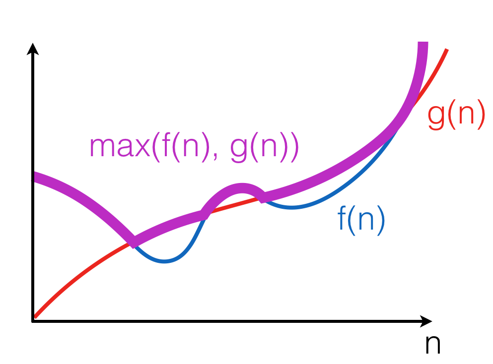

Order Notation¶
Let us introduce a concise notation for asymptotic behaviour of time demand functions as an input size \(n\) of an algorithm grows infinitely, i.e., \(n \rightarrow \infty\).
Big O-notation¶
Definition
The positive-valued function \(f(x) \in O(g(x))\) if and only if there is a value \(x_0\) and a constant \(c > 0\), such that for all \(x \geq x_0\), \(f(x) \leq c \cdot g(x)\).
This definition can be illustrated as follows:

The intuition is that \(f(x)\) grows no faster than \(c \cdot g(x)\) as \(x\) gets larger. Notice that the notation \(O(g(x))\) describes a set of functions, “approximated” by \(g(x)\), modulo constant factors and the starting point.
Properties of Big O-notation¶
Property 1
\(O(k \cdot f(n)) = O(f(n))\), for any constant \(k\).
Multiplying by \(k\) just means re-adjusting the values of the arbitrary constant factor \(c\) in the definition of big-O. This property ensures machine-independence (i.e., we can forget about constant factors). Since \(\log_{a}n = \log_{a}b \times \log_{b}n\), we don’t need to be specific about the base when saying \(O(\log~n)\).
Property 2 \(f(n) + g(n) \in O(\max(f(n), g(n))\)
Here, \(\max((f(n), g(n))\) is a function that for any n, returns the maximum of \(f(n)\) and \(g(n))\):
{kind=link}
The property follows from the fact that for any \(n, f(n) + g(n) \leq 2 \cdot f(n)\) or \(f(n) + g(n) \leq 2 \cdot g(n)\). Therefore, \(f(n) + g(n) \leq 2 \cdot \max(f(n), g(n))\).
Property 3
\(\max(f(n), g(n)) \in O(f(n) + g(n))\).
This property follows from the fact that for any \(n, \max(f(n), g(n)) \leq f(n)\) or \(\max(f(n), g(n)) \leq g(n)\). Therefore, \(\max(f(n), g(n)) \leq f(n) + g(n)\).
Corollary
\(O(f(n) + g(n)) = O(\max(f(n), g(n))\).
Property 4
If \(f(n) \in O(g(n))\), then \(f(n) + g(n) \in O(g(n))\).
Follows from the fact that there exist \(c, n_0\), such that for any \(n \geq n_0, f(n) \leq c \cdot g(n)\); Therefore, for any \(n \geq n_0, f(n) + g(n) \leq (c + 1) \cdot g(n)\). Intuitively, a faster-growing function eventually dominates.
Little o-notation¶
Definition
The positive-valued function \(f(x) \in o(g(x))\) if and only if for all constants \(\varepsilon > 0\) there exists a value \(x_0\) such that for all \(x \geq x_0, f(x) \leq \varepsilon \cdot g(x)\).
This definition provides a tighter boundary on \(f(x)\): it states that \(g(x)\) grows much faster (i.e., more than a constant factor times faster) than \(f(x)\).
Example
We can show that \(x^2 \in o(x^3)\), as for any \(\varepsilon > 0\) we can take \(x_0(\varepsilon) = \frac{1}{\varepsilon} + 1\), so for all \(x \geq x_0(\varepsilon), \varepsilon \cdot x^3 \geq \varepsilon \cdot (\frac{1}{\varepsilon} + 1) \cdot x^2 > x^2\).
Proofs using O-notation¶
Standard exercise: show that \(f(x) \in O(g(x))\) (or not) is approached as follows:
- Unfold the definition of O-notation;
- Assuming that the statement is true, try to find a fixed pair of values \(c\) and \(x_0\) from the definition to prove that the inequality holds for any \(x\);
- If such fixed pair cannot be found, as it depends on the value of \(x\), then the universal quantification over \(x\) in the definition doesn’t hold, hence \(f(x) \notin O(g(x))\).
Example 1: Is \(n^2 \in O(n^3)\)?
Assume this holds for some \(c\) and \(n_0\), then:
As this clearly holds for \(n_0 = 2\) and \(c = 1\), we may conclude that \(n^2 \in O(n^3)\).
\(\square\)
Example 2: Is \(n^3 \in O(n^2)\)?
Assume this holds for some \(c\) and \(n_0\), then:
Now, since \(c\) and \(n_0\) are arbitrary, but fixed, we can consider \(n = c + 1 + n_0\) (and so we can do for any \(c\) and \(n_0\)), so we see that the inequality doesn’t hold, hence in this case no fixed \(c\) and \(n_0\) can be found to satisfy it for any \(n\). Therefore \(n^3 \notin O(n^2)\).
\(\square\)
{kind=link}
Complexity of sequential composition¶
Consider the following OCaml program, where a is a value of size n:
let x = f1(a)
in x + f2(a)
Assuming the complexity of f1 is \(f(n)\) and the complexity of f2 is \(g(n)\), executing both of them sequentially leads to summing up their complexity, which is over-approximated by \(O(\max(f(n), g(n))\). This process of “collapsing” big O’s can be repeated for a finite number of steps, when it does not depend on the input size.